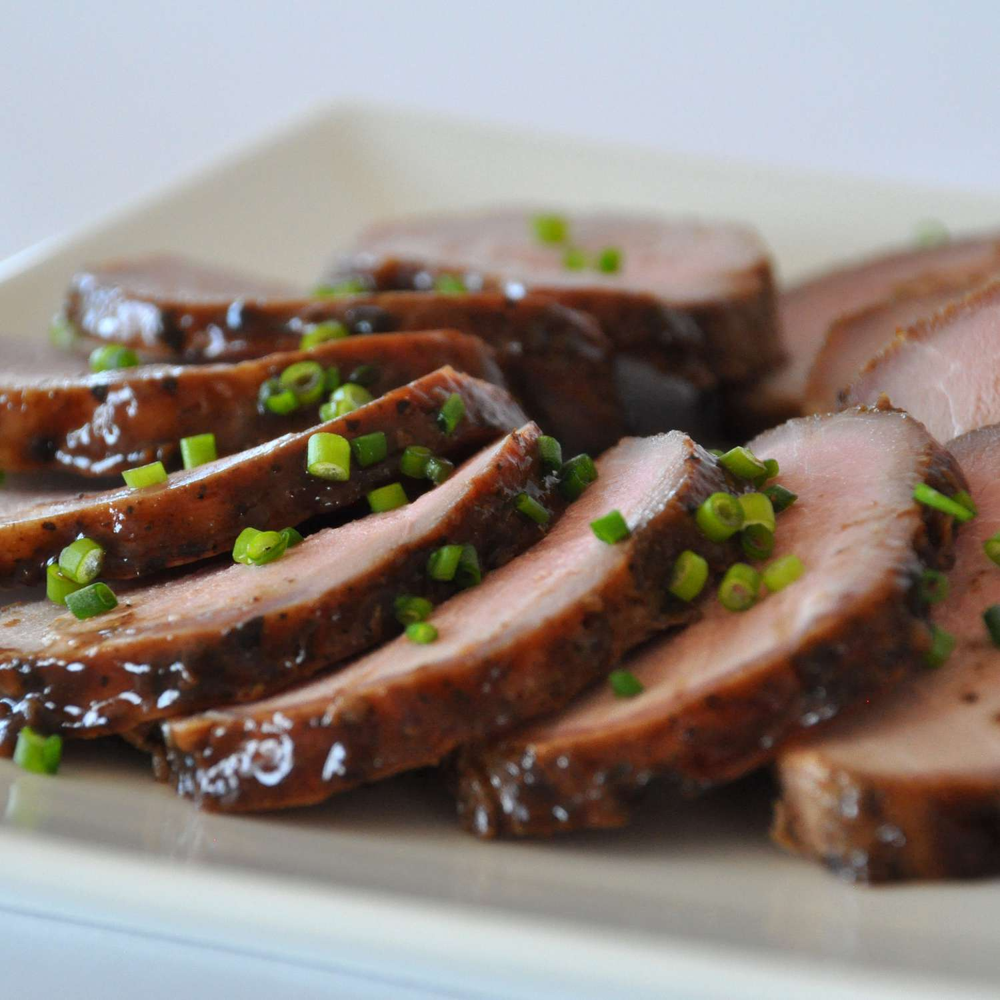

Asian Pork Tenderloin

Description
This Asian pork recipe is simple and flavorful. Marinate the pork
tenderloin for at least 8 hours (overnight is best) and flip it after 4
hours. It's great with rice and veggies like bok choy. Enjoy!
Ingredients
- 1 (2 pound) fat-trimmed pork tenderloin
- ⅓ cup lite soy sauce
- ¼ cup sesame oil
- 2 tablespoons Worcestershire sauce
- 3 green onions, chopped
- 4 cloves garlic, crushed
- 2 tablespoons packed light brown sugar
- 1 ½ tablespoons Asian chile paste
- 1 ½ teaspoons pepper
Steps
- Place pork tenderloin in a shallow dish.
-
Pour soy sauce, sesame oil, and Worcestershire sauce into a medium bowl.
Whisk in green onions, garlic, brown sugar, chile paste, and pepper
until combined. Pour sauce over tenderloin, turning meat a few times to
coat. Cover the dish and marinate in the refrigerator for 8 hours to
overnight.
- Preheat the oven to 450 degrees F (230 degrees C).
-
Transfer pork tenderloin with marinade into an aluminum foil-lined
baking pan.
-
Roast in the preheated oven until an instant-read thermometer inserted
into the center reads at least 145 degrees F (63 degrees C), 25 to 30
minutes. Allow to stand 5 to 10 minutes before carving.